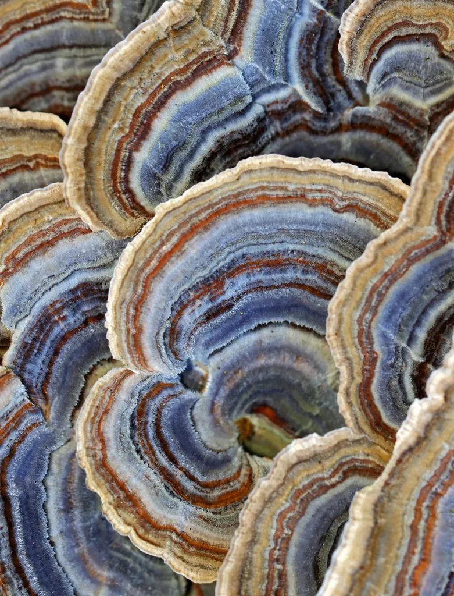

真菌 · 真菌界
云芝 Trametes versicolor

菌盖布满黑白灰褐相间环纹的木腐菌，层层叠生在枯木上，像一把把小扇子，是提取云芝多糖的药用真菌。
- 分类
- 门担子菌门纲伞菌纲目多孔菌目科多孔菌科属栓菌属
- 栖息环境
- 阔叶树的枯木、倒木和树桩上，常层层叠生
- 地理分布
- 温带和亚热带地区广泛分布，中国各地林区均有
- 保护级别
- 暂无评估（IUCN 未评估，中国未列入重点保护名录）
物种志
云芝是担子菌门多孔菌目的木腐真菌，子实体呈薄片状，半圆形或扇形，直径 2–10 cm，厚 1–3 mm，常层层叠生。菌盖表面密布黑色、白色、灰色、褐色相间的同心环纹，覆盖细绒毛，像彩色的天鹅绒；菌盖下侧为细密的菌管，白色至淡黄色，孔口细小；孢子印白色。
云芝野生于阔叶树的枯木和倒木上，靠分解木材生长，在温带和亚热带地区广泛分布，中国各地林区都有。它的菌盖色彩斑斓、层层叠生，是森林中常见的木腐菌。云芝是重要的药用真菌，其提取物云芝多糖被认为具有免疫调节作用，常被用于保健品和药物研究。云芝生长速度快，人工栽培常用木屑菌袋，采集多在秋季进行。
形态与习性
- 菌盖半圆形或扇形，直径 2–10 cm，厚 1–3 mm
- 表面黑白灰褐相间的同心环纹，覆盖细绒毛
- 菌管白色至淡黄色，孔口细小
- 孢子印白色
- 药用云芝多糖具有免疫调节作用
- 生境阔叶树枯木、倒木和树桩上
- 栽培可用木屑菌袋人工栽培
趣味知识
- 云芝的菌盖布满彩色环纹，摸上去像天鹅绒。
- 它层层叠生在枯木上，像一把把小扇子。
- 云芝多糖是云芝的药用成分，常被用于免疫调节研究。
- 云芝生长快，可用木屑菌袋人工栽培。